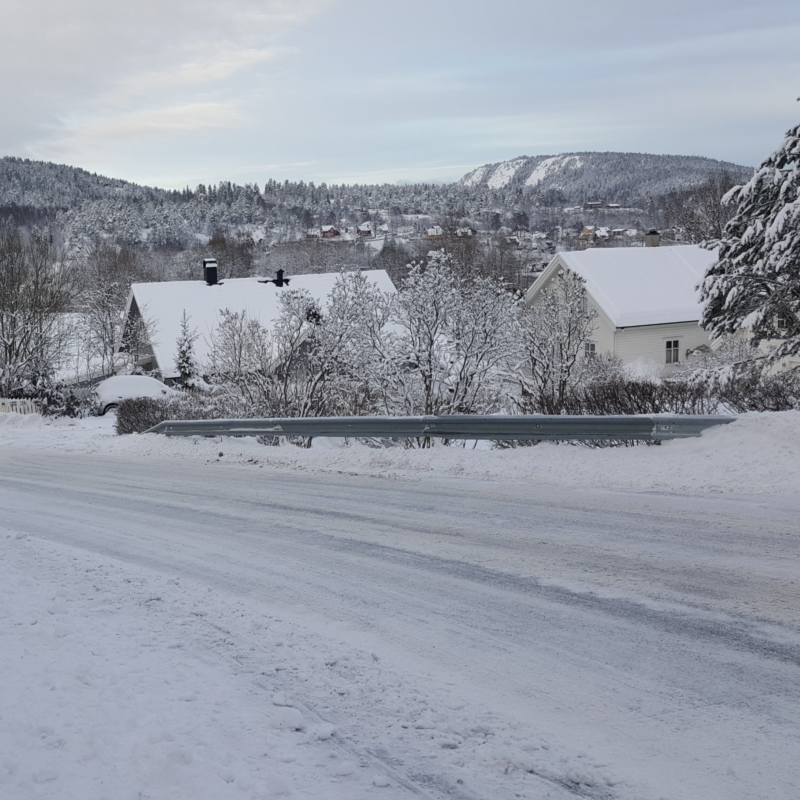

Noorwegen

In de tijd dat ik in Noorwegen heb gezeten heb ik een stage van 4 maanden gedaan.
Dit ging voornamelijk over 3D modelleren en hoe ik een variatie van machine gebruik.
Hiervan was het meest interessante de CNC-frees. Je zou hier echt van alles mee willen maken!
Buiten de stage had ik natuurlijk wel nog vrij en vakanties tussendoor.
Dit was de eerste keer dat ik alleen in het buitenland was, er zaten dus wel spannende momenten bij.
Gelukkig was het voornamelijk gewoon hardstikke mooi en interessant om er te zijn. Er is namelijk meer dan genoeg te zien!
Het meest bekende aan noorwegen is dan natuurlijk de natuur waar ik zelf ook flink van heb kunnen genietne.
Lange treinreizen waren voor deze reden dan ook echt geen straf.
Egypte
 De paar keren dat ik in Egypte ben geweest waren ze allemaal hartstikke mooi. Maar de afgelope keer was toch het beste.
Deze keer heb ik dan eindelijk mijn duikbrevet gehaald. We zouden eigenlijk de eerste paar duiken in het zwembad doen,
alleen de instructeurs vonden het water te koud, daarom gingen we maar lekker de zee in.
De paar keren dat ik in Egypte ben geweest waren ze allemaal hartstikke mooi. Maar de afgelope keer was toch het beste.
Deze keer heb ik dan eindelijk mijn duikbrevet gehaald. We zouden eigenlijk de eerste paar duiken in het zwembad doen,
alleen de instructeurs vonden het water te koud, daarom gingen we maar lekker de zee in.
Onderweg naar de duiklocatie hadden we al wat geluk om vissen te zien die langs de boot zwommen.
Dit samen met het heerlijke "winterse" temperatuurtje van egypte zorgde voor een erg leuke trip, ondanks dat we nog niet eens het water in zijn geweest.
Na een tijdje op de boot riep de instructeur ons erbij, om te vertellen hoe je de uitrusting in elkaar zet en hoe je het aan doet.
Toen kwam het moment dat we eindelijk de uitrusting aan moesten gaan trekken en gingen snel daarna het water in. We spraken eerst een paar veliheidsregels af.
Toen doken we naar beneden en zwommen we naar een prachtig stukje rif waar je omringt was door koraal.